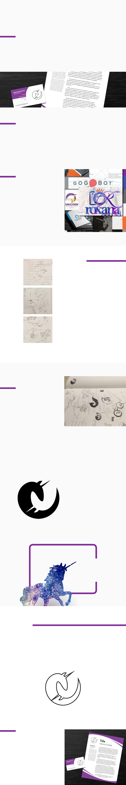

PURPOSE
Self identity package is a face of a designer and
a marketing tool to display designer’s identity,
values, characteristics and skills necessary to
deliver the message of professional in the field.
The aim of this specific project is also to help
the designer identify the career path and the
scope of work in broad design field.
Case Study
Self-Identity Package
Final design of self-identity package
REQUIREMENTS
• Logo
• Business Card
• Letterhead
PROBLEM
Research and develop a strong identity with
clear values and set goals. Translate the
designer’s personality, values, and career goals
into a professional design with a distinct,
recognizable brand. A clear and consistent
visual message must be delivered in printed
formats over the course of two weeks.
EXPLORATION
After collecting the mood inspiration board and
exploring the color palette, I made some eort
to explore my personality in a list and drew
images associated with the quality next to the
list. The rst idea that came to mind is doing
something similar to the unicorn logo I had
on my mood board since horses have been my
inspiration and passion from childhood.
I bounced o of the idea towards a more simple
approach, to work with the horn. The horn
is the magical part of the unicorn and still
relates to the horse but is more relevant to my
discoveries in the characteristics list since I
wanted to convey the creativity, inspiration and
adventurousness. Freedom, I thought, is a part
of me that desires to be reected in my identity,
so I drew a wing, then a feather.
But really, where do I want to end up, I thought,
who do I want to be? Right away the answer
crossed my mind, a web person, maybe. The
exploration continues to turn the gears. I don’t
know yet what I am supposed to do because
Graphic Design is a huge umbrella of specialists
and generalists. I want to be able to do anything
that crosses my work table, I want to be a
magical unicorn.
Exploration of self characteristics
and values through lists/sketches
Visuals context derivatives and
exploration of logo design
Decision to work with a horse as
an identity feature
DISCOVERY & IDEATION
The decision was made — a unicorn. Logo is
a framework of all projects from the rst one
and after. Clients want one designer to be able
to execute the project from front to back. How
should I explain that one little person cannot
know how to do everything? I do not want to
explain that, I want what clients want. Why ght
when you can do a compromise?
Planning to build a website is itself a lot of
work. Researching the types of designers a
client should hire is triple that work, and a
client can’t know for sure who is able to do
what. I see a problem here, and I aim to solve
it by attempting to go in a direction of project
oriented design. I see many posts in freelance
that ask to develop a website; they need a
designer to do it fast, cheap, and with every
possible widget.
In clients’ mind, the website they want collects
money, sends automatic emails, manages
subscriptions, has a database of user activity
and a lot more features where one person
would be overwhelmed doing. If you place
this workload on a unicorn alone, she would
be overwhelmed/magic deprived, no doubt;
however, technology is changing, our society is
changing, millennial have shorter and shorter
attention span and we can’t have ve people
doing HTML, CSS, Java, PHP, UX/UI, and visual
design for one website.
I believe that, with evolving technology, the
code and design would not take as much time
as it has taken in MOSAIC times. I believe
that soon we will standardize things in design
enough to speed things up, since my degree
is called Graphic Design Associate of Science
(AS, not AA). There is hope in a miracle that
unicorns, not generalists, will evolve in the mess
of Graphic Design positions.
From this delightful thought of not yet a
professional me, here goes my logo, my
inspiration, with feedback of fellow students
and professor. I used the negative space,
simplied the concept, and brought the sketch
in the digital magic box. A grid, squares, circles,
lines, a thought about mathematical logarithms
reassure me once again that design is not art,
as I hoped when entering the eld. A snack,
conguration of lines to meet in this exact spot
at this exact curve angle, a step away, does it
look right? Balance, weight, contrast, unity,
gestalt, negative space... Does not fall, looks
even and aligned, especially with that white ear
farther from the horn. Google calls it an visual
perception of perfection, right?
Although I really wanted to have a fancy ll
with silver-purple shine in the positive space
of the silhouette version, because of the timing
constrains and FedEx’s limited service, the
deliverable of the logo was simplied to a
formal stroke.
Logo development from the idea to the concept
A logo must be identied from a silhouette
Mission College had a signicant impact on the
primary typeface of designer’s nal package
as it has a clean, futuristic, edgy look that
corresponds to the feel of the logo and the
primary message of the brand identity.
SOLUTION
The nal design of the logo played magnicent
part in whole self-identity package because it
nalized the values and standards of aim for the
designer’s future career goals. Purple color was
derived from the mood board as planned and
chosen as the primary design color. Light gray
has been chosen to complement, highlight, and
ease the weight of purple decorative elements in
the layout.
Everything
is possible
You just got to be a unicorn
CONCLUSION
The self-identity package design is a successful
story of development and decision on the path
to professional design career. A clear message
of an imaginative dreamer has been sent in a
consistent visual approach to block and uid
design elements. The requirements have been
met in a professional, organized manner in three
original designs of a logo, a business card,
and a letterhead.
Inspiration mood board and color palette
Final design of the self identity package